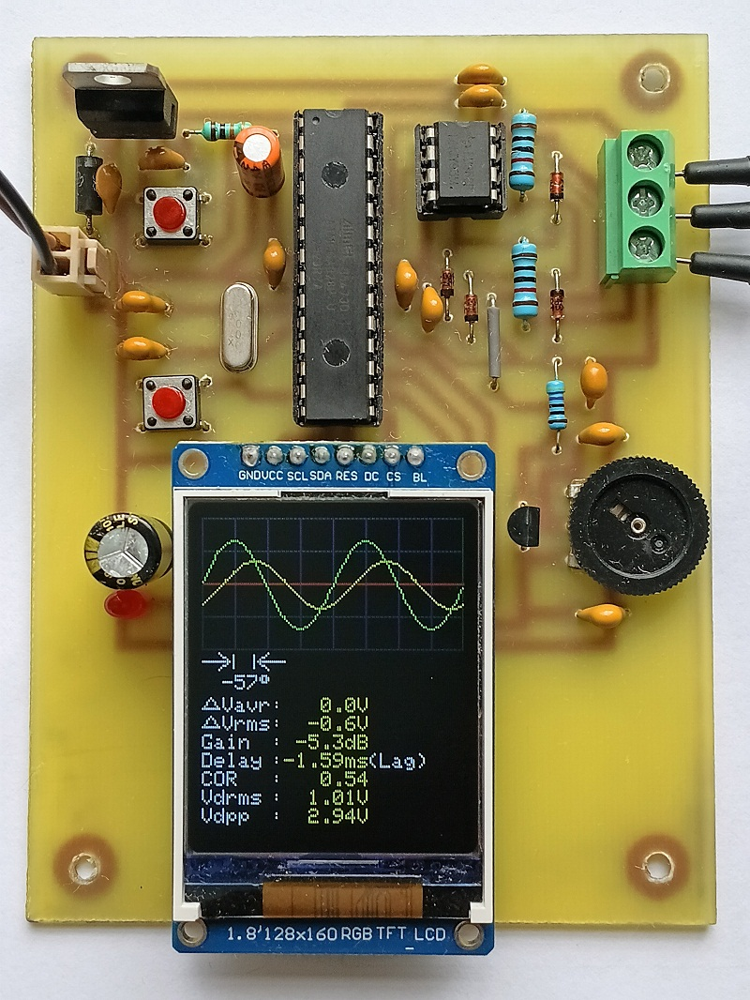
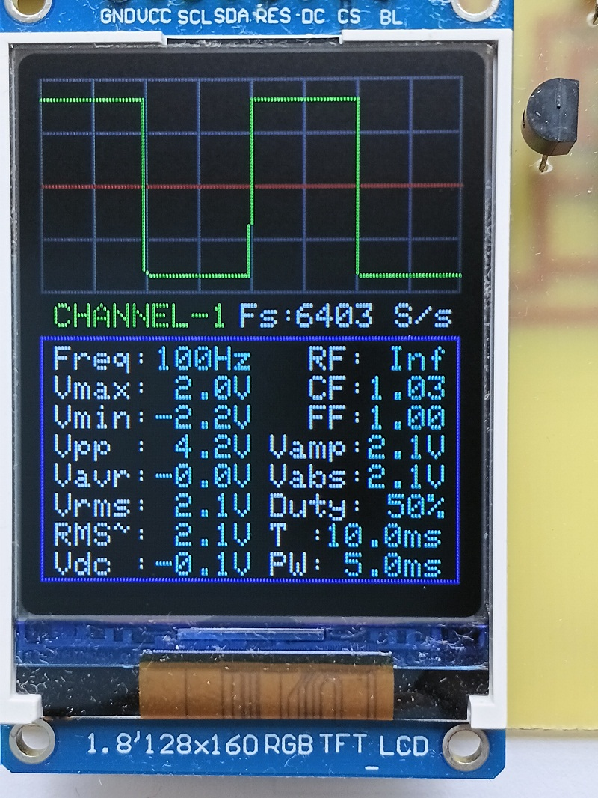
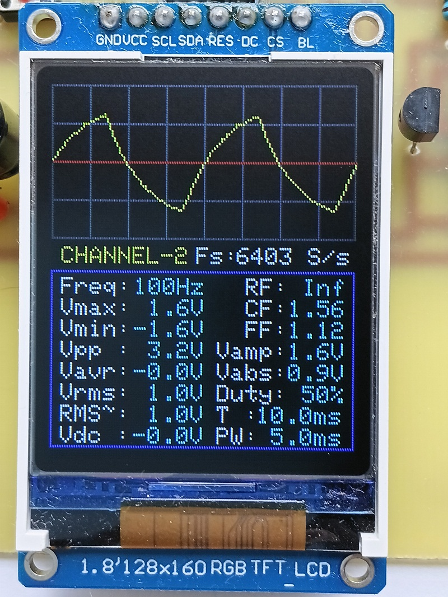
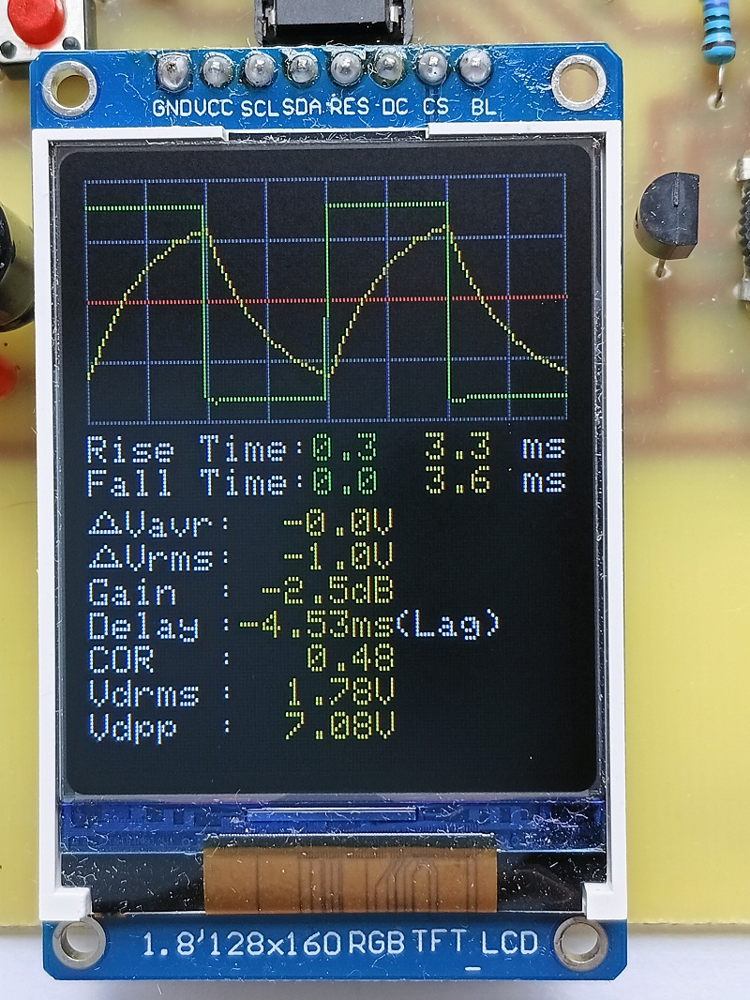
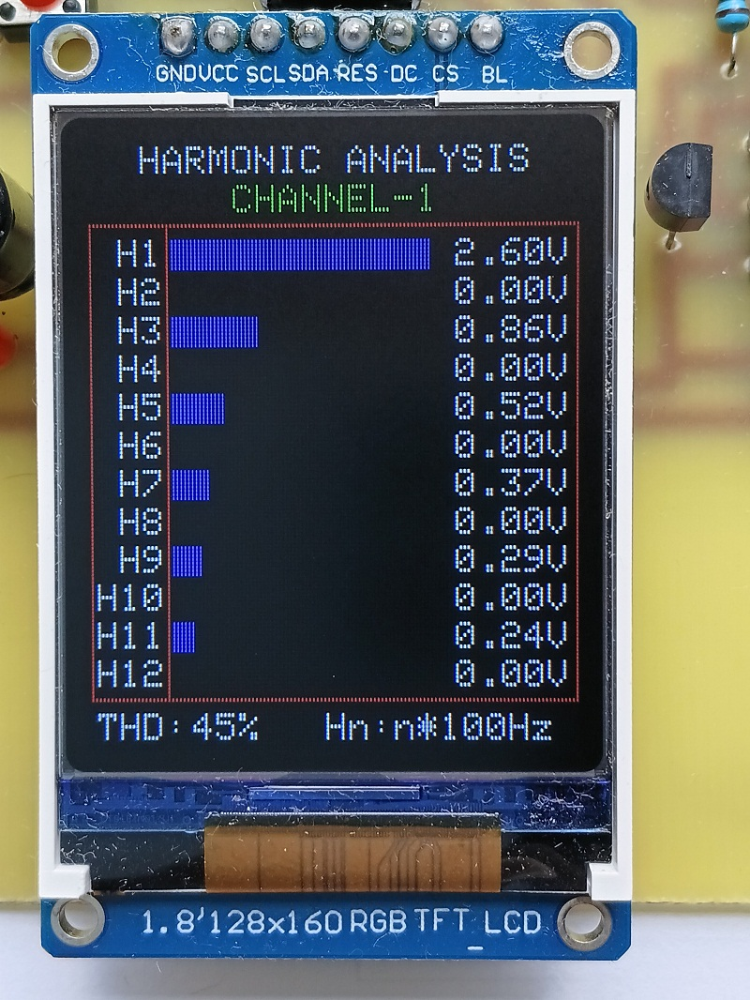
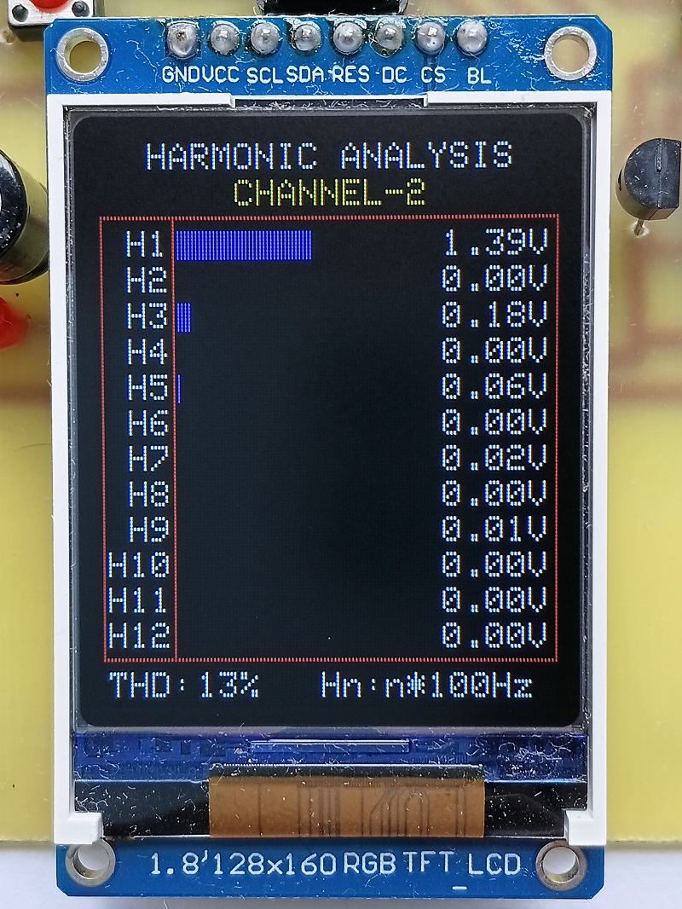
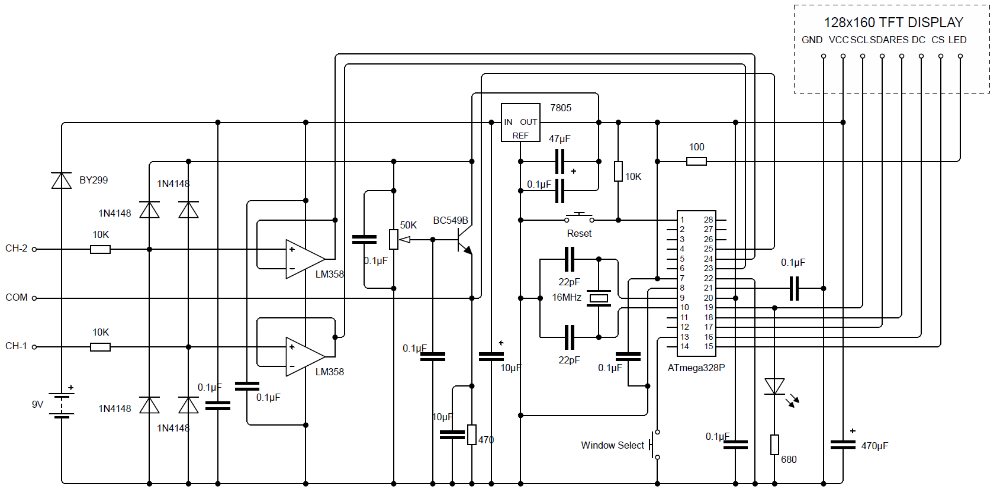

Overview
This project is a low-cost, custom-built digital oscilloscope based on the ATmega328P microcontroller and a 128×160 colour TFT display.
Unlike a simple Arduino waveform display, the instrument automatically analyses acquired signals and presents useful information including two-channel waveform visualization, automatic acquisition adjustment, voltage and timing measurements, phase comparison, gain and delay measurement, THD calculation, and harmonic analysis.
The project was first developed and tested using an Arduino Uno platform and was subsequently implemented on a custom single-sided PCB. The custom PCB produced noticeably smoother waveform display, reduced visible jitter, and improved high-frequency performance.

Main Features
Core Instrument
- ATmega328P-based embedded oscilloscope
- Dual analog input channels
- 128×160 ST7735 colour TFT
- Automatic sampling adjustment
- Real-time waveform display
- Automatic measurement frequency range of approximately 5 Hz–2.5 kHz
Voltage Measurements
- Vmax and Vmin
- Vpp
- Average voltage (Vavg)
- Total RMS voltage (Vrms)
- AC-component RMS (RMS~)
- DC offset (Vdc)
- Amplitude (Vamp)
- Average absolute voltage (Vabs)
Timing and Shape
- Sampling rate (Fs)
- Frequency
- Duty cycle
- Pulse width
- Time period
- Rise and fall time
- Ripple factor (RF)
- Crest factor (CF)
- Form factor (FF)
Two-Channel Analysis
- Phase difference
- Gain in dB
- Time delay
- Correlation coefficient (COR)
- ΔVavg and ΔVrms
- Differential RMS voltage (Vdrms)
- Differential peak-to-peak voltage (Vdpp)
- Relative peak displacement indication
Harmonic Analysis
- Total Harmonic Distortion (THD)
- Fundamental and higher harmonics
- CH1 harmonic spectrum
- CH2 harmonic spectrum
Five Display Windows
Window 1 — Channel 1
Displays the CH1 waveform with Fs, frequency, Vmax, Vmin, Vpp, Vavg, Vrms, RMS~, Vdc, RF, CF, FF, Vamp, Vabs, duty cycle, time period, and pulse width.

Window 2 — Channel 2
Displays the CH2 waveform together with the same measurements.

Window 3 — Dual-Channel Comparison
Displays both waveforms and provides phase, delay, rise/fall time, ΔVavg, ΔVrms, gain, correlation, Vdrms, and Vdpp.

Window 4 — CH1 Harmonic Analysis
Displays the fundamental, higher-order harmonics, and calculated THD for Channel 1.

Window 5 — CH2 Harmonic Analysis
Provides harmonic-spectrum analysis for Channel 2.

Automatic Acquisition Adjustment
The instrument adapts acquisition parameters according to the measured signal instead of using one fixed sampling condition for every frequency. This allows the ATmega328P to make better use of its ADC and processing capability.
Waveform Rendering
The drawing routine connects adjacent sampled points using a normal line when the points are close together and a vertical connection for a large transition. This gives a more natural representation of fast square-wave and pulse-wave transitions.
Measurement Methods
THD Measurement
THD is calculated from the fundamental and relevant harmonic amplitudes.
| Waveform | Measured THD | Theoretical Value |
|---|---|---|
| Pure sine wave | ~0% | 0% |
| Triangular wave | 11–12% | 12.06% |
| 50% square wave | 44–45% | 48.3% |
| 20% pulse wave | 107–110% | 113.3% |
| Sawtooth wave | 76–77% | 80.3% |
Ripple Factor
- Half-wave rectified sine: RF ≈ 1.21 or 121%
- Full-wave/bridge rectified sine: RF ≈ 0.482 or 48.2%
When the average value is very close to zero, the display indicates Inf.
Phase and Delay
The instrument identifies the first sampled point at which each waveform reaches its peak. If corresponding peak positions are separated by ΔN samples:
For sinusoidal waveforms, phase is obtained from the whole-waveform correlation coefficient:
The firmware subtracts each channel average before forming correlation, removing the DC component. A 50% relative-frequency gate is used for delay comparison; phase for sine waves may still be displayed when frequencies differ, representing instantaneous relative phase.
RC Low-Pass Filter Phase Test
| Frequency | Theoretical Phase Lag | Measured Phase | Approx. Error |
|---|---|---|---|
| 100 Hz | 57.42° | 57° lag | 0.7% |
| 250 Hz | 75.67° | 75° lag | 0.8% |
The test used R = 12 kΩ measured as 11.87 kΩ and C = 0.22 µF measured as 0.21 µF.
Hardware
Main Controller
- Microcontroller: ATmega328P
- ADC: 10-bit internal ADC
- Display: 128×160 colour TFT
- Channels: 2 analog channels
TFT Configuration
TFT_RGB selects RGB/BGR colour order. TFT_TYPE selects the newer BLACKTAB or older GREENTAB initialization profile.
Analog Front-End
The analog front-end provides high input impedance, buffering, ADC input protection, and suitable voltage shifting. Op-amp buffering reduces ADC sample-and-hold charge-retention effects between sequential channel conversions.
Circuit Diagram

Baseline and Input Range
A potentiometer adjusts the DC level so the waveform crosses the red centre/reference line. The total input signal should be kept within approximately 5 Vpp, while the baseline should keep the sampled waveform approximately within −2.5 V to +2.5 V.
Attenuation
A 10:1 divider reduces a 20 V signal to approximately 2 V. The divider must be selected according to source impedance, bandwidth, and the input circuitry.
Source Code
The complete Arduino firmware is available here: View Oscilloscope.ino on GitHub
Software
The firmware is written in Arduino C/C++ for the ATmega328P.
Acquisition and Display
- ADC acquisition
- Automatic sampling adjustment
- Frequency detection
- Waveform rendering
- TFT user interface
Analysis Routines
- Voltage, RMS, RMS~, Vdc, Vabs
- Duty cycle and pulse width
- Ripple, crest, and form factor
- Phase, delay, correlation, gain
- Differential voltage calculations
- THD and harmonic analysis
Memory Considerations
Because the ATmega328P has limited Flash and SRAM, the project uses shared functions, compact data types, lookup tables, reuse of harmonic information, and avoidance of unnecessary duplicate code.
Practical Performance and Limitations
| Function | Practical Performance |
|---|---|
| Automatic measurement range | Approximately 5 Hz–2.5 kHz |
| General waveform and electrical measurements | Useful to approximately 2.5 kHz and beyond; display becomes increasingly congested at higher frequencies |
| Two-channel phase measurement | Highly accurate across the operating range and beyond |
| Harmonic spectrum and THD | Particularly accurate up to approximately 500 Hz |
| Below approximately 5 Hz / DC / no periodic signal | Not treated as a periodic-frequency measurement |
These are practical observations, not laboratory-calibrated absolute specifications. Accuracy depends on signal amplitude, waveform, source impedance, sampling condition, analog front-end, PCB layout, and other factors.
- Limited 10-bit ADC resolution
- Limited ATmega328P processing power and memory
- Limited sampling bandwidth
- Higher-frequency waveform fidelity decreases
- THD accuracy depends on sampling window and harmonic count
- Input protection depends on the implemented analog front-end